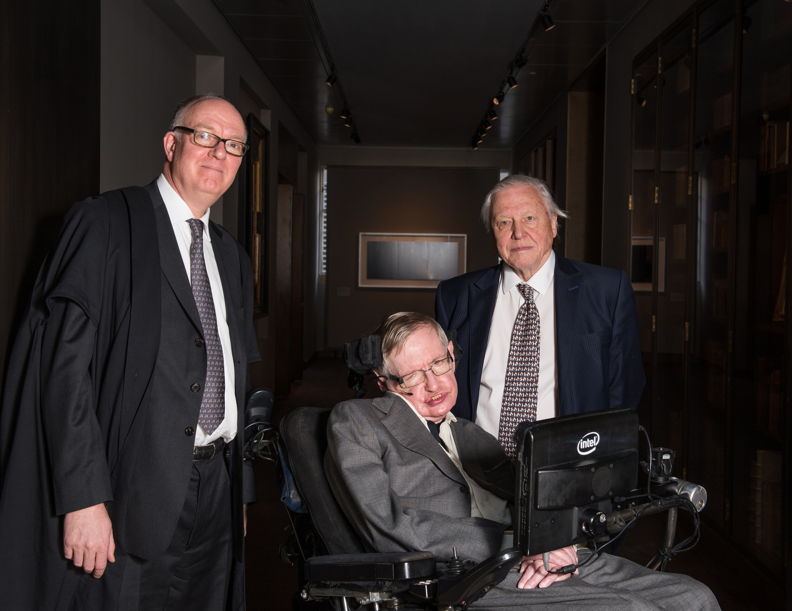

Stephen William Hawking (8 January 1942 – 14 March 2018) was an English theoretical physicist, cosmologist, and author who was director of research at the Centre for Theoretical Cosmology at the University of Cambridge at the time of his death.
He was the Lucasian Professor of Mathematics at the University of Cambridge between 1979 and 2009.

From left to right: Richard Ovenden, Stephen Hawking, David Attenborough
1942 - Born on the 8th of January 1942 in Oxford
1952 - Started School at St Albans School
1959 - Began his University education at Oxfords University College
1962 - Began his graduate work at Trinity Hall in Cambridge
1966 - Hawking received his PhD degree in Mathematics and theoretical physics
1973 - He had his first book published "The Large Scale Structure of Space-time"
1977 - He was appointed a professor with a chair in gravitational physics
1978 - He received the Albert Einstein Medal and an honorary doctorate from the University of Oxford
1984 - The first draft of A Brief History of Time was completed
1988 - The book was published
2006/2009/2013 - He was awarded the Copley Medal from the Royal Society (2006), the Presidential Medal of Freedom (2009) and the Russian Special Fundamental Physics (2013)
2009 - Hawking retired from Cambridge University
2018 - Hawking died at his home in Cambridge on 14 March 2018, at the age of 76. His family stated that he "died peacefully"
2018 - Hawking's final paper "A smooth exit from inflation?" was posthumously published in the Journal of High Energy Physics on 27 April 2018.